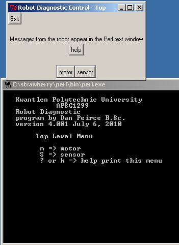
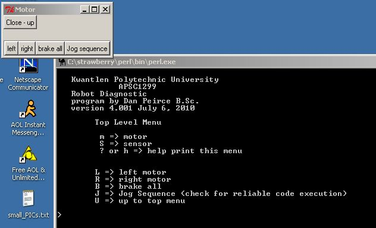
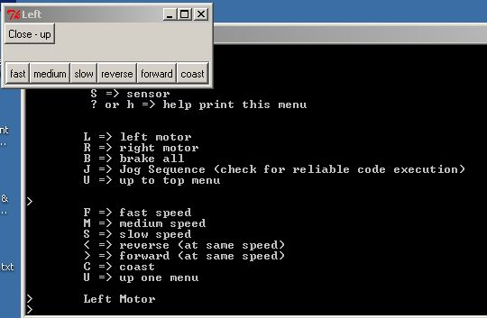
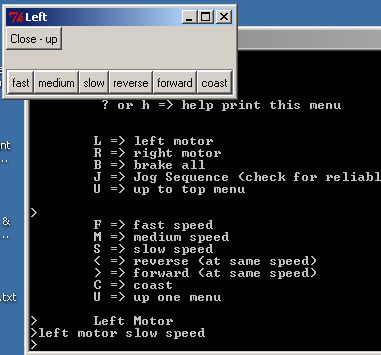
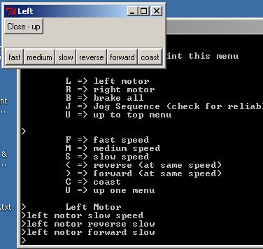
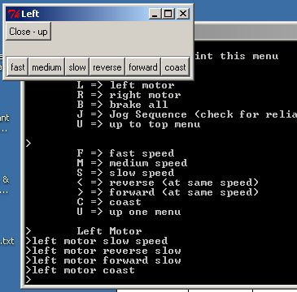
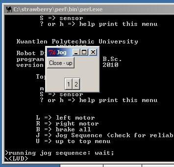
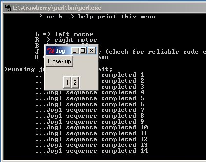
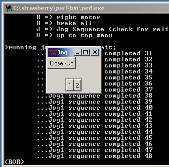
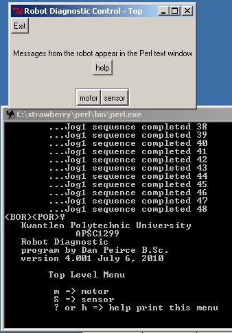

July 30, 2010
Largely on my own time I have written a Perl/Tk script to interact with the Robot Diagnostic Program that runs on the sumovore robots.
Perl and Tk are available for free and together allow one to produce a simple graphical interface without a great deal of effort. I had previously worked with Tcl/Tk but find I like Perl much better since it has a syntax more like C than Tcl does. I opted for the Strawberry Hill distribution of Perl which allows one to make use of the Perl modules at CPAN.
http://strawberryperl.com/ link to current install file for Perl http://search.cpan.org/~srezic/Tk-804.029/pod/gencmd link to download file for Tk
note that strawberryperl includes a C compiler
to compile this module for a particular platform
(it does take a long time since the module is big)http://search.cpan.org/~bbirth/Win32-SerialPort-0.22/lib/Win32/SerialPort.pm link to download file for Win32::SerialPort
This is needed to make use of the computer
serial port under windows.
(this module compiles quickly as it is small).I don't have a lot of time to document the program at this time so I am just going to post some screen shots of it working. The program is quite simple and acts as a simple substitute for hyperterminal. It only displays the response from the robot and does not interpret it (not yet). It allows one to operate the diagnostic program with mouse clicks rather than entering menu items. The top window is the Tk window with the buttons. The bottom window contains the text response from the robot.
 clicked on motor
clicked on left
clicked on slow
clicked on reverse followed by forward
clicked on coast
example of jog1 when batteries are too low.
This resulted in a Low Voltage Detection. <LVD>
jog1 with better batteries
batteries not fresh enough for jog2.
Had been running jog1 but Brown Out Reset occurred
when 2 was clicked on!
Robot powered down and powered back up. (see <POR> indicating normal Power On Reset condition.
